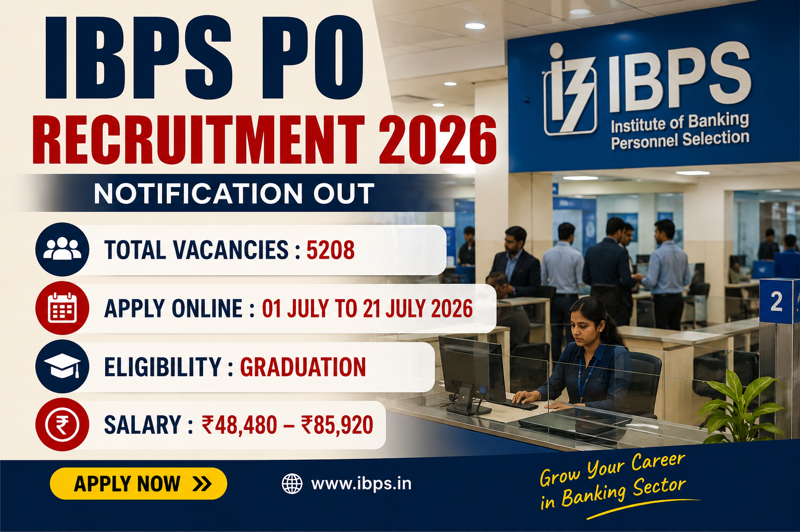

यदि आपका सपना Public Sector Bank में Probationary Officer (PO) बनने का है, तो यह आपके लिए वर्ष 2026 की सबसे बड़ी बैंकिंग भर्ती में से एक है। IBPS हर वर्ष विभिन्न सरकारी बैंकों के लिए PO भर्ती आयोजित करता है और इस बार भी हजारों पदों पर योग्य उम्मीदवारों का चयन किया जाएगा।
इस भर्ती के माध्यम से चयनित उम्मीदवारों की नियुक्ति देश के विभिन्न Participating Public Sector Banks में की जाएगी। चयन प्रक्रिया पूरी तरह पारदर्शी होगी जिसमें Preliminary Examination, Main Examination तथा Interview शामिल हैं।
इस लेख में हमने आधिकारिक अधिसूचना के आधार पर IBPS PO Recruitment 2026 से जुड़ी प्रत्येक महत्वपूर्ण जानकारी सरल एवं आसान भाषा में प्रस्तुत की है। यहाँ आपको Vacancy Details, Eligibility, Age Limit, Educational Qualification, Salary, Exam Pattern, Selection Process, Application Fee, Important Dates, Documents Required तथा Online Apply Process सहित सभी जानकारी एक ही स्थान पर मिलेगी।
| Particular | Details |
|---|---|
| Organization | Institute of Banking Personnel Selection (IBPS) |
| Recruitment Name | CRP PO/MT-XVI |
| Post Name | Probationary Officer / Management Trainee |
| Total Vacancies | 5208 Posts |
| Application Mode | Online |
| Registration Starts | 01 July 2026 |
| Last Date | 21 July 2026 |
| Selection Process | Prelims + Mains + Interview |
| Job Location | Across India |
| Official Website | www.ibps.in |
IBPS अर्थात Institute of Banking Personnel Selection प्रत्येक वर्ष Public Sector Banks के लिए Probationary Officer एवं Management Trainee पदों पर भर्ती आयोजित करता है। इस भर्ती के माध्यम से उम्मीदवारों को बैंकिंग क्षेत्र में अधिकारी स्तर की नौकरी प्राप्त करने का सुनहरा अवसर मिलता है।
CRP PO/MT-XVI भर्ती के अंतर्गत चयनित अभ्यर्थियों की नियुक्ति विभिन्न Participating Public Sector Banks में की जाएगी। चयनित उम्मीदवारों को प्रशिक्षण के बाद Probationary Officer के रूप में नियुक्त किया जाएगा, जहाँ उन्हें बैंकिंग संचालन, ग्राहक सेवा, ऋण प्रबंधन, शाखा प्रशासन तथा वित्तीय सेवाओं से जुड़े महत्वपूर्ण कार्यों की जिम्मेदारी सौंपी जाएगी।
बैंकिंग क्षेत्र में स्थायी करियर, आकर्षक वेतन, नियमित पदोन्नति, नौकरी की सुरक्षा तथा विभिन्न सरकारी सुविधाओं के कारण IBPS PO देश की सबसे लोकप्रिय बैंकिंग भर्तियों में से एक मानी जाती है।
| Particular | Details |
|---|---|
| Conducting Body | IBPS |
| Advertisement | CRP PO/MT-XVI |
| Vacancies | 5208 |
| Job Type | Public Sector Banking Job |
| Application Mode | Online |
| Preliminary Exam | August 2026 |
| Main Examination | October 2026 |
| Interview | November / December 2026 |
| Final Allotment | January 2027 |
आवेदन करने वाले उम्मीदवार नीचे दी गई सभी महत्वपूर्ण तिथियों का विशेष ध्यान रखें ताकि आवेदन प्रक्रिया समय पर पूरी की जा सके।
| Event | Date |
|---|---|
| Online Registration Starts | 01 July 2026 |
| Last Date for Registration | 21 July 2026 |
| Fee Payment | 01 July – 21 July 2026 |
| Pre-Exam Training | August 2026 |
| Preliminary Examination | August 2026 |
| Preliminary Result | September 2026 |
| Main Examination | October 2026 |
| Main Result | November 2026 |
| Interview | November / December 2026 |
| Final Allotment | January 2027 |
IBPS द्वारा जारी आधिकारिक अधिसूचना के अनुसार इस वर्ष Probationary Officer / Management Trainee (PO/MT) के कुल 5208 पदों पर भर्ती की जाएगी। यह भर्ती देश के विभिन्न Public Sector Banks में आयोजित की जा रही है। बैंकवार रिक्तियों की संख्या अलग-अलग निर्धारित की गई है और अंतिम चयन के बाद उम्मीदवारों को संबंधित बैंक में नियुक्ति दी जाएगी।
उम्मीदवार आवेदन करने से पहले अपनी पसंद के बैंक, कार्यस्थल और भविष्य की करियर संभावनाओं को ध्यान में रखकर आवेदन करें। अंतिम रिक्तियों में आवश्यकतानुसार परिवर्तन भी किया जा सकता है।
| Category | Vacancy |
|---|---|
| Total Posts | 5208 |
| Recruitment Type | Probationary Officer / Management Trainee |
| Job Location | Across India |
| Participating Banks | Public Sector Banks |
IBPS PO Recruitment 2026 के माध्यम से चयनित उम्मीदवारों की नियुक्ति विभिन्न Public Sector Banks में की जाएगी। चयन के बाद बैंक का आवंटन मेरिट, उपलब्ध रिक्तियों तथा उम्मीदवार की वरीयता के आधार पर किया जाएगा।
IBPS PO के माध्यम से चयनित उम्मीदवारों को भारत के प्रमुख सरकारी बैंकों में अधिकारी बनने का अवसर मिलता है। नियमित पदोन्नति, आकर्षक वेतन, Job Security तथा भविष्य में Scale-I से उच्च पदों तक प्रमोशन की संभावनाएँ उपलब्ध रहती हैं।
आवेदन करने वाले उम्मीदवार के पास किसी मान्यता प्राप्त विश्वविद्यालय से किसी भी विषय में Graduation की डिग्री होना अनिवार्य है। अंतिम वर्ष के वे छात्र जिनका परिणाम निर्धारित तिथि तक घोषित नहीं हुआ है, वे पात्र नहीं होंगे।
| Qualification | Status |
|---|---|
| Bachelor's Degree (Graduation) | Required |
| Recognized University | Mandatory |
| Computer Knowledge | Desirable |
| Local Language | Preferred |
IBPS PO Recruitment 2026 के लिए उम्मीदवार की आयु निर्धारित Cut-off Date के अनुसार न्यूनतम 20 वर्ष तथा अधिकतम 30 वर्ष होनी चाहिए। आरक्षित वर्गों को सरकारी नियमों के अनुसार आयु सीमा में छूट प्रदान की जाएगी।
| Minimum Age | Maximum Age |
|---|---|
| 20 Years | 30 Years |
यदि आपने किसी मान्यता प्राप्त विश्वविद्यालय से Graduation पूरी कर ली है और आपकी आयु निर्धारित सीमा के भीतर है, तो आप इस भर्ती के लिए आवेदन कर सकते हैं। बैंकिंग अनुभव होना आवश्यक नहीं है। यह भर्ती Freshers एवं Experienced दोनों उम्मीदवारों के लिए उपयुक्त है।
IBPS PO के रूप में चयनित उम्मीदवारों को 12th Bipartite Settlement के अनुसार आकर्षक वेतन प्रदान किया जाएगा। Basic Pay के अतिरिक्त Dearness Allowance (DA), House Rent Allowance (HRA), City Compensatory Allowance (CCA), Special Allowance, Learning Allowance तथा अन्य कई सुविधाएँ भी बैंक के नियमों के अनुसार दी जाएंगी।
प्रोबेशन अवधि सफलतापूर्वक पूरी होने के बाद उम्मीदवारों को नियमित अधिकारी (Scale-I Officer) के रूप में नियुक्त किया जाता है, जिसके बाद Promotion एवं Career Growth के कई अवसर उपलब्ध होते हैं।
| Particular | Details |
|---|---|
| Pay Scale | ₹48,480 – ₹85,920 |
| Basic Pay | ₹48,480 |
| Job Type | Permanent Officer Post |
| Probation | As Per Participating Bank Rules |
IBPS PO Recruitment 2026 में उम्मीदवारों का चयन कई चरणों में किया जाएगा। प्रत्येक चरण में सफल होने वाले उम्मीदवारों को अगले चरण के लिए बुलाया जाएगा। अंतिम चयन Main Examination एवं Interview में प्राप्त अंकों के आधार पर तैयार Merit List से किया जाएगा।
IBPS PO परीक्षा दो चरणों में आयोजित की जाती है— Preliminary Examination तथा Main Examination। दोनों परीक्षाएँ Computer Based Test (CBT) Mode में आयोजित होती हैं।
| Subject | Questions | Marks |
|---|---|---|
| English Language | 30 | 30 |
| Quantitative Aptitude | 35 | 35 |
| Reasoning Ability | 35 | 35 |
| Total | 100 | 100 |
| Section | Marks |
|---|---|
| Reasoning & Computer Aptitude | 60 |
| General / Economy / Banking Awareness | 40 |
| English Language | 40 |
| Data Analysis & Interpretation | 60 |
| Descriptive Test | 25 |
| Total | 225 |
दोनों परीक्षाओं में Negative Marking लागू होगी। प्रत्येक गलत उत्तर पर निर्धारित नियमों के अनुसार अंक काटे जाएंगे।
IBPS PO Recruitment 2026 के लिए आवेदन शुल्क केवल Online Mode में स्वीकार किया जाएगा। शुल्क जमा होने के बाद ही आवेदन सफल माना जाएगा।
| Category | Fee |
|---|---|
| SC / ST / PwBD | ₹175/- |
| General / OBC / EWS | ₹850/- |
ऑनलाइन आवेदन करने से पहले उम्मीदवार निम्नलिखित दस्तावेज तैयार रखें।
सभी दस्तावेज निर्धारित File Size एवं Format में होने चाहिए। आवेदन Submit करने से पहले सभी अपलोड किए गए दस्तावेजों की स्पष्टता अवश्य जांच लें।
IBPS PO Recruitment 2026 के लिए आवेदन केवल ऑनलाइन माध्यम से स्वीकार किए जाएंगे। आवेदन करने से पहले उम्मीदवार आधिकारिक अधिसूचना को ध्यानपूर्वक पढ़ें तथा सभी आवश्यक दस्तावेज पहले से तैयार रखें। नीचे दिए गए चरणों का पालन करके आसानी से आवेदन किया जा सकता है।
हर वर्ष हजारों उम्मीदवार छोटी-छोटी गलतियों के कारण आवेदन प्रक्रिया में समस्या का सामना करते हैं। नीचे दिए गए सुझावों का पालन करके आप इन गलतियों से बच सकते हैं।
इस वर्ष IBPS PO/MT-XVI भर्ती के अंतर्गत कुल 5208 पद जारी किए गए हैं।
ऑनलाइन आवेदन प्रक्रिया 01 जुलाई 2026 से शुरू हो चुकी है।
उम्मीदवार 21 जुलाई 2026 तक ऑनलाइन आवेदन कर सकते हैं।
किसी मान्यता प्राप्त विश्वविद्यालय से Graduation Degree अनिवार्य है।
उम्मीदवार की आयु 20 से 30 वर्ष के बीच होनी चाहिए। आरक्षित वर्गों को नियमानुसार छूट मिलेगी।
Selection Preliminary Exam, Main Exam, Interview, Document Verification तथा Final Allotment के आधार पर किया जाएगा।
SC/ST/PwBD उम्मीदवारों के लिए ₹175 तथा General/OBC/EWS उम्मीदवारों के लिए ₹850 निर्धारित किया गया है।
हाँ। यदि आपके पास Graduation Degree है तो आप आवेदन कर सकते हैं। Banking Experience आवश्यक नहीं है।
दोनों परीक्षाएँ Computer Based Online Mode में आयोजित की जाएंगी।
उम्मीदवार IBPS की आधिकारिक वेबसाइट से Notification PDF डाउनलोड कर सकते हैं।
| Particular | Link |
|---|---|
| Official Website | Visit Website |
| Apply Online | Apply Online |
| Official Notification PDF | Download PDF |
Education Update Hub पर प्रकाशित सभी भर्ती संबंधी जानकारी आधिकारिक नोटिफिकेशन के आधार पर तैयार की जाती है। हमारा उद्देश्य उम्मीदवारों तक सही, सरल और भरोसेमंद जानकारी पहुँचाना है, ताकि वे बिना किसी भ्रम के आवेदन प्रक्रिया पूरी कर सकें।
IBPS PO Recruitment 2026 बैंकिंग सेक्टर में सरकारी नौकरी की तैयारी कर रहे उम्मीदवारों के लिए एक शानदार अवसर है। इस भर्ती के माध्यम से कुल 5208 Probationary Officer/Management Trainee पदों पर नियुक्ति की जाएगी। यदि आप पात्रता की सभी शर्तें पूरी करते हैं, तो अंतिम तिथि का इंतजार किए बिना जल्द से जल्द आवेदन करें।
ऑनलाइन आवेदन करने से पहले आधिकारिक नोटिफिकेशन को ध्यानपूर्वक पढ़ें और सभी आवश्यक दस्तावेज पहले से तैयार रखें। इससे आवेदन प्रक्रिया बिना किसी परेशानी के पूरी हो जाएगी।
Government Jobs, Banking, Railway, SSC, UPSC, Defence, CTET, Scholarships, Admit Card और Result से जुड़ी तेज़, सटीक और भरोसेमंद अपडेट के लिए नियमित रूप से Education Update Hub विजिट करते रहें।